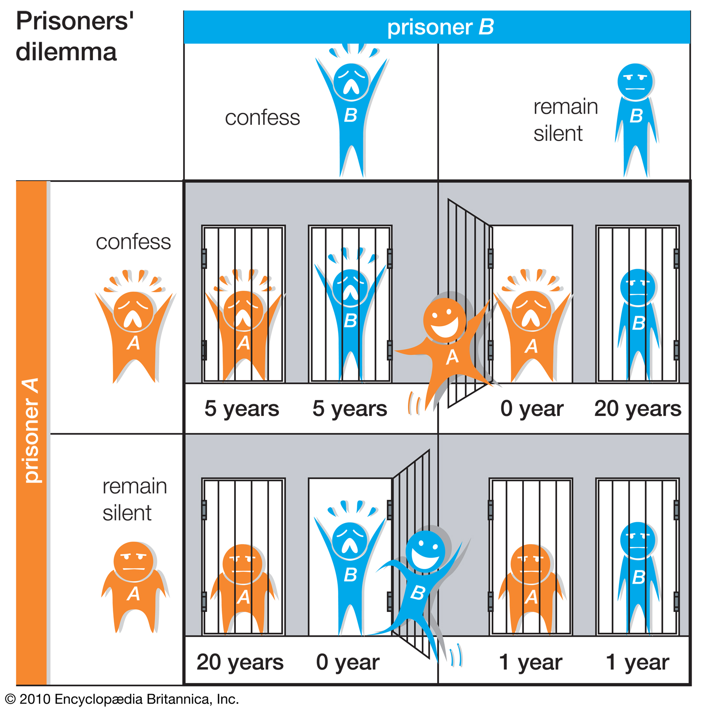

The prisoner's dilemma is a canonical example of a game analyzed in game theory that shows why two purely "rational" individuals might not cooperate, even if it appears that it is in their best interests[citation needed] to do so. It was originally framed by Merrill Flood and Melvin Dresher working at RAND in 1950. Albert W. Tucker formalized the game with prison sentence rewards and gave it the name "prisoner's dilemma" (Poundstone, 1992), presenting it as follows:
Two members of a criminal gang are arrested and imprisoned. Each prisoner is in solitary confinement with no means of speaking to or exchanging messages with the other. The police admit they don't have enough evidence to convict the pair on the principal charge. They plan to sentence both to a year in prison on a lesser charge. Simultaneously, the police offer each prisoner a Faustian bargain. Each prisoner is given the opportunity either to betray the other, by testifying that the other committed the crime, or to cooperate with the other by remaining silent. Here's how it goes:

If A and B each betray the other, each of them serves 5 years in prison
If A betrays B but B remains silent, A will be set free and B will serve 20 years in prison (and vice versa)
If A and B both remain silent, both of them will only serve 1 year in prison (on the lesser charge)
Our version of the game has several options for how it can be played but to start it matches up each student together with another randomly and they will choose to either defect or cooaperate. Once every player has chosen and submited their answer it will start a new round and will continue this process until the predetermined number the game creator decided upon. There are various game modes which the game creator can use. Such as a mode which shows each of the players the other players round history up to a point and that point is determined by the game creator.
In future versions we are planning on creating a indirect resiprosity evaluator where you will never play against the same player twice and you get a current reputation meter for the player you are playing with depending what they have done in their history.